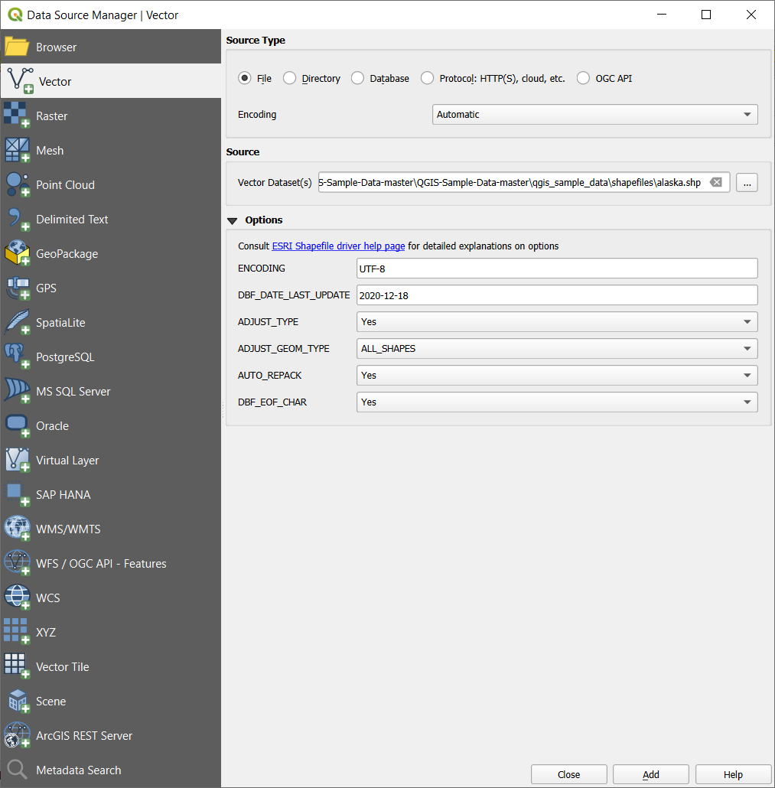
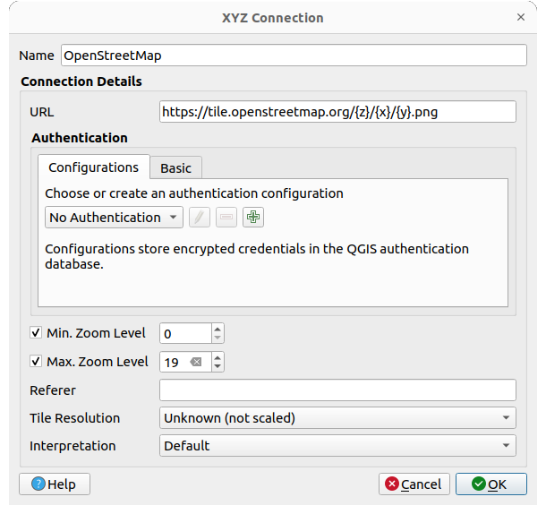

重要
翻訳は あなたが参加できる コミュニティの取り組みです。このページは現在 90.72% 翻訳されています。
11.1. データを開く
オープンソース・ソフトウェアのエコシステムの一部として、QGISは様々なライブラリの上に構築されています。これらのライブラリは、QGIS独自のプロバイダと組み合わされることで、多くのフォーマットを読み込む機能と、そして多くの場合は書き出す機能も提供しています：
Vector data formats include GeoPackage, GML, GeoJSON, GPX, KML, Comma Separated Values, ESRI formats (Shapefile, Geodatabase...), MapInfo and MicroStation file formats, AutoCAD DWG/DXF, GRASS and many more... Read the complete list of supported vector formats.
Raster data formats include GeoTIFF, JPEG, ASCII Gridded XYZ, MBTiles, R or Idrisi rasters, GDAL Virtual, SRTM, Sentinel Data, ERDAS IMAGINE, ArcInfo Binary Grid, ArcInfo ASCII Grid, and many more... Read the complete list of supported raster formats.
データベース形式：PostgreSQL/PostGIS, SQLite/SpatiaLite, Oracle, MS SQL Server, SAP HANA, MySQL等
WebマップとWebデータサービス（WM(T)S、WFS、WCS、CSW、XYZ tiles、ArcGIS services等）もQGISのプロバイダで扱うことが可能です。これらの一部についてのより詳しい情報は OGC / ISOプロトコルの操作 を参照してください。
アーカイブされたフォルダからサポートしているフォーマットのファイルを読み込んだり、QML ファイル （ QML-QGISスタイルファイル形式 ）などのQGISネイティブ形式や仮想レイヤ、メモリレイヤを使用することができます。
More than 80 vector and 140 raster formats are supported by GDAL and QGIS native providers.
注釈
さまざまな理由により、リストに挙げたすべてのフォーマットがQGISで動作するわけではありません。例えば、外部のプロプライエタリなライブラリを必要とする場合や、お使いのOSのGDAL/OGRのインストールが、使用したいフォーマットをサポートするようにビルドされていない場合もあります。利用可能なフォーマットのリストを確認するには、コマンドラインで ogrinfo --formats （ベクタ用）や gdalinfo --formats （ラスタ用）を実行するか、QGIS上で のメニューを確認してください。
QGISでは、データ形式に応じて、データセットを開くためのさまざまなツールがあります。それらは主に メニューまたは レイヤ管理 ツールバー（ メニューで有効にできます）で使用できます。ただし、これらのツールはすべて データソースマネージャ ダイアログというただ一つのダイアログを指しています。このダイアログは データソースマネージャツールバー にある  データソースマネージャを開く ボタンを押すか、または Ctrl+L を押すと開くことができます。 データソースマネージャ ダイアログ（ 図 11.1 ）は、ファイルベースのデータやデータベース、QGISがサポートするWebサービスを開くための統一されたインターフェイスを提供します。
データソースマネージャを開く ボタンを押すか、または Ctrl+L を押すと開くことができます。 データソースマネージャ ダイアログ（ 図 11.1 ）は、ファイルベースのデータやデータベース、QGISがサポートするWebサービスを開くための統一されたインターフェイスを提供します。

図 11.1 QGISのデータソースマネージャダイアログ
このメインエントリポイントの他に、接続されたデータベースを分析したり操作したりする高度な機能を提供する  DBマネージャ プラグインがあります。DBマネージャの機能についての詳細は、 DBマネージャプラグイン を参照してください。
DBマネージャ プラグインがあります。DBマネージャの機能についての詳細は、 DBマネージャプラグイン を参照してください。
他にも多くのツールやネイティブのプラグイン、サードパーティ製のプラグインがあり、様々なデータ形式を開くのに役立ちます。
この章では、QGISでデータをロードするためにデフォルトで提供されているツールのみを説明します。主に、 データソースマネージャ ダイアログに焦点を当てますが、 各タブの説明だけでなく、データプロバイダやフォーマットの仕様に基づいたツールについても説明します。
11.1.1. ブラウザパネル
ブラウザ は、素早く簡単にデータをプロジェクトに追加する主な方法の一つです。これは、以下の方法で利用できます。
- データソースマネージャを開く ボタン（ Ctrl+L ）を押して開いた データソースマネージャ のタブの一つにブラウザがあります。
（
 は ）メニューもしくは Ctrl+2 を押すことで開くQGISのパネルとして利用できます。
は ）メニューもしくは Ctrl+2 を押すことで開くQGISのパネルとして利用できます。
どちらの場合でも、 ブラウザ はレイヤの種類（ラスタ、ベクタ、テーブル）やデータソースの形式（プレーンまたは圧縮ファイル、データベース、webサービス）に関係なく、ファイルシステム内を検索しジオデータを管理するのに役立ちます。
11.1.1.1. インターフェースについて
ブラウザパネルの上部には、以下の機能を持つボタンがあります：
 選択したレイヤの追加 ：レイヤのコンテキストメニューから レイヤをプロジェクトに追加する を選択することでも、マップキャンバスにデータを追加することができます。
選択したレイヤの追加 ：レイヤのコンテキストメニューから レイヤをプロジェクトに追加する を選択することでも、マップキャンバスにデータを追加することができます。 再読み込み ：ブラウザツリーを更新します
再読み込み ：ブラウザツリーを更新します ブラウザのフィルタ ：特定のデータを検索するためにブラウザをフィルタリングします。検索語やワイルドカードを入力すると、ブラウザはツリーをフィルタリングして、一致するDBテーブル、ファイル名、フォルダへのパスのみを表示します -- 他のデータやフォルダは表示されません。 図 11.2 のブラウザ(2)パネルの例を参照してください。比較は大文字と小文字を区別するかどうかを指定できます。また、下記のオプションを設定することもできます：
ブラウザのフィルタ ：特定のデータを検索するためにブラウザをフィルタリングします。検索語やワイルドカードを入力すると、ブラウザはツリーをフィルタリングして、一致するDBテーブル、ファイル名、フォルダへのパスのみを表示します -- 他のデータやフォルダは表示されません。 図 11.2 のブラウザ(2)パネルの例を参照してください。比較は大文字と小文字を区別するかどうかを指定できます。また、下記のオプションを設定することもできます：通常 ：検索テキストを含むアイテムを表示します
ワイルドカード ：
?や*の文字を使用して、検索テキストの位置指定を調整した検索を実行できます。正規表現
 すべて折りたたむ ：ツリー全体を折りたたみます
すべて折りたたむ ：ツリー全体を折りたたみます プロパティウィジェットの有効化/無効化 ：オンに切り替わると、パネルの下部に新しいウィジェットが追加され、選択されたアイテムのメタデータが表示されます。
プロパティウィジェットの有効化/無効化 ：オンに切り替わると、パネルの下部に新しいウィジェットが追加され、選択されたアイテムのメタデータが表示されます。
ブラウザ パネル内のエントリは階層的にまとめられており、いくつかのトップレベルエントリがあります：
お気に入り ：よく使用する場所へのショートカットを置くことができる場所です
空間ブックマーク ：よく使用するマップ範囲を保存できる場所です（ 地図上の範囲のブックマーク 参照）
プロジェクトホーム ：プロジェクトに関連したデータ（の大半）が保存されているフォルダへのクイックアクセスです。デフォルト値は、プロジェクトファイルがあるディレクトリです。
ファイルシステムの ホーム ディレクトリと、ファイルシステムのルートディレクトリ
接続されているローカルドライブやネットワークドライブ
それから、プラットフォームや基礎となるライブラリにもよりますが、多数のコンテナ / データベース形式やサービスプロトコルのトップレベルエントリがあります：


11.1.1.2. ブラウザ項目とのインタラクション
ブラウザは、ブラウザへのドラッグ＆ドロップや、ブラウザからキャンバスや レイヤ パネルへのドラッグ＆ドロップ、 レイヤ パネルからブラウザ内のレイヤコンテナ（例えばGeoPackage等）へのドラッグ＆ドロップをサポートしています。
ブラウザ内のプロジェクトファイルのアイテムは展開することができ、プロジェクトに含まれる（グループを含む）完全なレイヤツリーを表示します。プロジェクトのアイテムはブラウザ内の他のアイテムと同様に扱われるため、（例えばGeoPackageファイルにレイヤアイテムをコピーするために）ブラウザ内でドラッグ＆ドロップしたり、ドラッグ＆ドロップやダブルクリックで現在のプロジェクトにアイテムを追加したりすることができます。
ブラウザ パネル内の要素を右クリックすると、コンテキストメニューが開きます。
ファイルシステムのディレクトリエントリの場合、コンテキストメニューには次のようなものがあります：
は、下記のエントリから選択して新規作成します
ディレクトリ...
GeoPackage...
シェープファイル...
お気に入りとして追加 ：お気に入りフォルダは好きな時に名前の変更（ お気に入りの名前の変更... ） や削除（ お気に入りを削除 ）ができます。
ブラウザから隠す ：隠されたフォルダは の設定で見えるように戻すことができます。
このディレクトリの高速スキャン
ディレクトリを開く...
ターミナルで開く...
プロパティ...
ディレクトリプロパティ...
プロジェクト内でレイヤとして扱うことのできるリーフエントリについては、コンテキストメニューにサポート項目があります。例えば、非データベース、非サービスベースのベクタ、ラスタ、メッシュデータソースには、以下の項目があります：
レイヤをプロジェクトに追加する
レイヤのプロパティ
Open with Data Source Manager...
または "<name of file>" を削除...
ファイルに表示
ファイルプロパティ...
レイヤのプロパティ エントリを選択すると、（レイヤがプロジェクトに追加された後に ベクタ レイヤや ラスタ レイヤのプロパティで表示されるものと同様な）以下の情報が表示されます：
レイヤに関する メタデータ 。メタデータのグループは次のとおりです： プロバイダからの情報 （可能ならば パス はソースへのハイパーリンクで表示されます）、 識別 、 領域 、 アクセス 、 属性 （ベクタレイヤの場合）、 バンド （ラスタレイヤの場合）、 連絡先 、 リンク （ベクタレイヤの場合）、 リファレンス （ラスタレイヤの場合）、 履歴
プレビュー パネル
ベクタソースの場合は属性テーブル（ 属性 パネル内）
Use Open with Data Source Manager... to directly open and configure the data source in the Data Source Manager using the URI of your data source. This simplifies the process of adding a layer from the Browser by allowing you to set specific opening options for the data source. It is currently available for vector (including the dedicated GeoPackage entry), raster, and SpatiaLite data sources.
ブラウザ を使用してプロジェクトにレイヤを追加するには、次の手順で操作します：
ブラウザ を上記の方法で有効にします。ファイルシステム、データベース、webサービスのブラウザツリーが表示されます。データベースやwebサービスが表示される前に、データベースやwebサービスへ接続する必要があるかもしれません（専用のセクションを参照してください）。
リストの中からレイヤを見つけます。
レイヤのコンテキストメニューを使用するか、レイヤ名をダブルクリックするか、レイヤを マップキャンバス へとドラッグ＆ドロップします。これでレイヤは レイヤパネル に追加され、マップキャンバス上で見ることができるようになります。
Tip
ブラウザからQGISプロジェクトを直接開く
プロジェクト名をダブルクリックするか、マップキャンバス上へドラッグ＆ドロップすることで、ブラウザパネルからQGISのプロジェクトを直接開くこともできます。
ファイルがロードされたら、マップナビゲーションツールを使用してレイヤをあちこちズームすることができます。レイヤのスタイルを変更するには、凡例内のレイヤ名をダブルクリックするか、レイヤ名を右クリックしてコンテキストメニューから を選択し、 レイヤプロパティ ダイアログを開きます。ベクタレイヤのシンボロジ設定の詳細については、 シンボロジプロパティ を参照してください。
ブラウザツリー内のアイテムを右クリックすると、以下の機能があります：
ファイルやテーブルについては、メタデータを表示したり、プロジェクト内に開きます。テーブルは名前を変更したり、行を削除したり、全行削除することもできます。
フォルダについては、お気に入りにブックマークしたり、ブラウザツリーから隠したりできます。非表示となったフォルダは、 タブで管理することができます。
空間ブックマーク の管理：ブックマークを作成したり、ブックマークを
XMLファイルとしてエクスポートしたり、XMLファイルからインポートしたりできます。データベースやwebサービスへの接続を作成します。
再読み込みや、スキーマ名の変更、スキーマの削除ができます。
また、ファイルをデータベースにインポートしたり、1つのスキーマ/データベースから別のスキーマ/データベースにテーブルをコピーしたりすることもドラッグ＆ドロップで簡単に行うことができます。2つ目のブラウザパネルを利用することで、ドラッグ中に長いスクロールを行わずに済みます。ファイルを選択して、一方のパネルから他方のパネルへとドラッグ＆ドロップするだけです。
図 11.2 横並びのQGISブラウザパネル
Tip
OSのファイルブラウザからドラッグ＆ドロップでQGISにレイヤを追加する
オペレーティングシステムのファイルブラウザから レイヤパネル またはマップキャンバスにファイルをドラッグ＆ドロップしても、ファイルをプロジェクトに追加できます。
11.1.2. DBマネージャ
DBマネージャ プラグインは、QGISがサポートする空間データベース形式（PostGIS、SpatiaLite、GeoPackage、Oracle Spatial、MS SQL Server、仮想レイヤ）を統合して管理するためのもう一つのツールです。これは、 メニューから有効化することができます。
DBマネージャ プラグインにはさまざまな機能があります。
データベースに接続し、その構造や内容を表示する
データベースのテーブルをプレビューする
ダブルクリックまたはドラッグ＆ドロップで、マップキャンバスへレイヤを追加する
QGISブラウザや他のデータベースから、データベースにレイヤを追加する
SQLクエリを作成し、実行結果をマップキャンバスへ追加する
仮想レイヤ を作成する
DBマネージャの機能に関する更なる情報は、 DBマネージャプラグイン を参照してください。

図 11.3 [DBマネージャ]ダイアログ
11.1.3. プロバイダベースの読み込みツール
ブラウザパネルとDBマネージャはレイヤを追加するためにQGISが提供する主なツールですが、この他に、データプロバイダに特化したツールもあります。
注釈
いくつかの 外部プラグイン も、QGISで特定の形式のファイルを開くためのツールを提供しています。
11.1.3.1. ファイルからレイヤを読み込む
ファイルからレイヤを読み込むには、次の手順で操作します：
データソースマネージャ ダイアログでレイヤタイプのタブを開きます。つまり、
データソースマネージャを開く ボタン（または Ctrl+L ）を押し、目的のタブを有効にします。 もしくは、ソースタイプは
 ファイル を選択します
ファイル を選択します... ブラウズ ボタンをクリックします
ファイルシステムを検索し、サポートされているデータソースを読み込みます。ダイアログで Ctrl キーを押しながら複数のアイテムをクリックするか、 Shift キーを押しながら最初と最後のアイテムを選択することでアイテム範囲を選択することで、複数のレイヤを同時に読み込むことが可能です。ファイル形式のフィルタには、十分にテストされたファイル形式のみが表示されます。他のファイル形式は、
全ファイル（プルダウンメニューの一番上のアイテム）を選択することで読み込むことができます。Press Open to load the selected file into Data Source Manager dialog.
Depending on the selected layer type, additional Options (encoding, geometry type, table filtering, file locking, data formatting ...) are available for configuring. These options are described in detail in the specific GDAL vector or raster driver documentation. At the top of the options, a text with hyperlink will directly lead to the documentation of the appopriate driver for the selected file format.
 図 11.6 オプション付きでシェープファイルをロードする
追加 を押すとQGISにファイルが読み込まれ、マップビューに表示されます。複数のレイヤを含んでいるベクタデータセットを追加する場合、 追加するアイテムを選択 ダイアログが表示されます。このダイアログでは、データセットから追加したい特定のレイヤを選択することができます。また、オプション では以下の選択ができます：
 グループにレイヤを追加する
グループにレイヤを追加する- システム内部テーブルを表示
- 空のベクタレイヤを表示。
図 11.7 は、
alaska.shpファイルを読み込んだ後のQGISの様子です。
図 11.7 アラスカのシェープファイルがロードされたQGIS
注釈
MapInfo （例 .tab ）やAutoCAD（ .dxf ）などいくつかのファイル形式は一つのファイル内にさまざまなジオメトリタイプを混在させることが可能なため、このようなデータセットを開く時には、レイヤごとに1つのジオメトリとするために、使用するジオメトリを選択するダイアログが開きます。
 ベクタ と
ベクタ と  ラスタ タブでは、 ファイル 以外のソースタイプからレイヤを読み込むことができます：
ラスタ タブでは、 ファイル 以外のソースタイプからレイヤを読み込むことができます：
ArcInfo Binary Coverage、UK. National Transfer FormatやUS Census Bureauのraw TIGER形式、OpenfileGDBといった特定のベクタフォーマットを読み込むことができます。これらを読み込むためには、 ソースタイプ で ディレクトリ を選択します。この場合、 ... ブラウズ ボタンを押すと、ダイアログではディレクトリの選択が可能になります。- データベース ソースタイプでは、既存のデータベース接続を選択したり、選択したデータベースタイプの接続を作成したりすることができます。利用可能なデータベースタイプには、
ODBC、Esri Personal GeoDatabase、MS SQL Server、PostgreSQL、MySQLなどがあります。新規 ボタンを押すと、 新しいOGRデータベース接続を作成する ダイアログが開きます。指定できるパラメータは 保存された接続の作成 で説明しているものと同じです。 Open ボタンを押すと、利用可能なテーブルの中から、例えば PostGIS が有効になっているデータベースのテーブルなどを選択することができます。
- プロトコル ソースタイプは、ローカル、あるいはネットワークに保存されたデータを開きます。このデータはパブリックアクセスが可能か、商用クラウドストレージサービスのプライベートバケットに保存されているかのいずれかです。サポートされているプロトコルタイプは以下のとおりです：
HTTP/HTTPS/FTP： URI と、必要に応じて 認証 を指定しますCloud storage such as
AWS S3,Google Cloud Storage,Microsoft Azure Blob,Microsoft Azure Data Lake Storage,Alibaba OSS Cloud, andOpen Stack Swift Storagesupports direct control over VSI Credential Options when adding OGR vector or GDAL raster layers. You need to fill in the Bucket or container and the Object key first. After that, you can add the necessary Credential Options.When adding OGR vector or GDAL raster layers from the cloud based protocols, you can also set additional Credential options for that specific driver and bucket. When credential options are found in a layer's URI, they will also be automatically set. This allows different layers to use different credentials.
OGC
WFS 3をサポートするサービス（まだ実験段階です）。GeoJSONまたはGEOJSON - Newline Delimitedフォーマットを使用しているか、CouchDBデータベースに基づくものです。 URI が必須で、 認証 はオプションです。ベクタソースタイプ全てについて、 文字コード の指定が可能です。 設定を使うこともできます。
The
OGC API source type allows you to access
vector
and raster data
from servers that implement the OGC API standards.
To use this option:Select
OGC API from the Data Source Manager
dialog.Enter the endpoint of the OGC API service you want to connect to. Note that you don't need to prefix the endpoint with "OGCAPI:".
Click Connect to establish a connection to the server.
11.1.3.2. メッシュレイヤを読み込む
メッシュは通常、時間やその他の成分を持った非構造格子です。空間成分には、2Dまたは3D空間の頂点、辺、面の集合が含まれます。メッシュレイヤに関する詳細な情報は メッシュデータの操作 を参照してください。
メッシュレイヤをQGISに追加するには、次の手順で操作します：
メニューから選択するか、
データソースマネージャを開く ボタンをクリックして、 ダイアログを開きます。左のパネルの
 メッシュ タブを有効にします。
メッシュ タブを有効にします。... ブラウズ ボタンを押し、ファイルを選択します。 さまざまなファイル形式 がサポートされています。
ファイルを選択し、 追加 ボタンを押します。ネイティブのメッシュレンダリングを使用してレイヤが追加されます。
選択したファイルが多数のメッシュレイヤを含む場合には、ダイアログが表示され、読み込むサブレイヤ選択するよう促されます。読み込むレイヤを選択して OK ボタンを押すと、ネイティブのメッシュレンダリングでレイヤが読み込まれます。レイヤ群をグループにして読み込むこともできます。

図 11.8 データソースマネージャのメッシュタブ
11.1.3.3. 区切りテキストファイルをインポートする
区切りのあるテキストファイル（例えば .txt 、 .csv 、 .dat 、 .wkt ）は上記のツールを使って読み込むことができますが、その方法ではファイルはシンプルなテーブルとして表示されます。時には、区切りのあるテキストファイルに可視化したい座標 / ジオメトリが含まれていることがあります。  CSVテキストレイヤの追加 で読み込むことで、これを可視化することができます。
CSVテキストレイヤの追加 で読み込むことで、これを可視化することができます。
- データソースマネージャを開く アイコンをクリックし、 データソースマネージャ ダイアログを開きます
- CSVテキスト タブを有効にします
... ブラウズ ボタンをクリックし、インポートしたい区切りのあるテキストファイル（例えば
qgis_sample_data/csv/elevp.csv）を選択します。プロジェクト内でレイヤに使用したい名前を レイヤ名 フィールドに入力します。 （例：
Elevation）以下に説明するように、データセットや必要に合わせて設定を行います。
図 11.9 CSVテキストダイアログ
ファイル形式
ファイルが選択されると、QGISは最近使用された区切り文字を使用してファイルの解析を試み、フィールドと行を識別します。QGISがファイルを正しく解析できるようにするためには、正しい区切り文字を選択することが重要です。区切り文字には、次のいずれかを選択して指定することができます：
- CSV（コンマで区切られた値） は、コンマの文字を使います。
 正規表現区切り を選んだ場合は 式 フィールドにテキストを入力します。例えば、区切り文字をタブに変更するには、
正規表現区切り を選んだ場合は 式 フィールドにテキストを入力します。例えば、区切り文字をタブに変更するには、 \t（これは正規表現ではタブ文字に使用されます）を使用します。- カスタム区切り は、
コンマ、空白、タブ、セミコロン等の定義済み区切り文字の中から選択します。
レコードとフィールドのオプション
他にもデータ認識に使用できる便利なオプションがいくつかあります：
破棄するヘッダ行数 ：ファイルの始めの数行が空行あるいは別フォーマットであるときに、これをインポートしないようにする場合に便利です。
- 最初の行はフィールド名 ：最初の行の値をフィールド名として使用します。チェックがない場合には、QGISはフィールド名に
field_1、field_2等を使用します。 - フィールド型を検出する ：フィールドの型を自動的に認識します。チェックがない場合には、全ての属性はテキストフィールドとして扱われます。
- 小数点記号にコンマを使う ：小数点の区切り文字を強制的ににコンマとすることができます。
- 前後の空白を削除する ：フィールドから前後の空白文字を取り除くことができます。
- 空フィールドを削除する
カスタム論理値: ブール値として検出される一組のカスタム文字列を追加することができます。
フィールド型を検出
QGIS tries to detect the field types automatically (unless
Detect field types is not checked) by examining
the content of an optional sidecar CSVT file (see GeoCSV specification)
and by scanning the whole file to make sure that all values can actually
be converted without errors, the fall-back field type is text.
検出されたフィールド型は、サンプルデータのプレビューテーブルのフィールド名の下に表示され、必要な場合は手動で変更できます。
次のフィールド型がサポートされています:
ブール値ブール値として解釈される、大文字小文字を区別しないリテラルの組みで、1/0,true/false,t/f,yes/no整数 (integer)整数 (integer - 64 bit)小数点付き数値: 倍精度浮動小数点数日付時刻日付時刻テキスト
ジオメトリ定義
ファイルが解析されたら、 ジオメトリ定義 の設定を行います。
- ポイント座標 レイヤがポイントジオメトリ型で、 X属性 、 Y属性 、 Z属性 （3次元データの場合）、 M値の属性 （計測次元の場合）のフィールドを含む場合には、これを指定します。座標が度 / 分 / 秒で定義されている場合には、 度分秒を使う のチェックボックスにチェックを入れます。
 CRSの選択 ウィジェットを使用して、適切な ジオメトリのCRS を指定します。
CRSの選択 ウィジェットを使用して、適切な ジオメトリのCRS を指定します。 - Well-known text (WKT) オプションは、空間情報がWKTにより表現されている場合に使用します：WKTジオメトリが含まれる ジオメトリフィールド を選択し、 適切な ジオメトリタイプ を選ぶか、QGISの自動検出に任せます。 CRSの選択 ウィジェットを使用して、 適切な ジオメトリのCRS を指定します。
ファイルが非空間データの場合には、
ジオメトリなし（属性のみのテーブル） を有効にすると、通常のテーブルとして読み込まれます。
レイヤ設定
また、以下を有効にできます：
- 空間インデックスを使う ：地物の表示や空間的な選択のパフォーマンスを改善します。
- サブセットインデックスを使う ：（レイヤプロパティで定義されている場合に） サブセットフィルタ のパフォーマンスを改善します。
- ファイルを監視する ：QGISの実行中に他のアプリケーションによってファイルが変更されたかを監視します。
最後に 追加 をクリックし、マップにレイヤを追加します。この例では、 Elevation という名前のポイントレイヤがプロジェクトに追加され、QGISの他のマップレイヤと同様に動作します。このレイヤは .csv ソースファイルに対するクエリの結果であり（従ってこれにリンクされているため）、ディスク上に空間レイヤを取得するには 保存する 必要があります。
サンプルデータ
パーサーのプロパティを設定すると、サンプルデータのプレビューが適用された設定に合わせて更新されます。
また、サンプルデータテーブルでは、自動的に決定されたカラムの型を上書きすることもできます。
11.1.3.4. DXFファイルやDWGファイルをインポートする
DXF ファイルや DWG ファイルはブラウザパネルからドラッグ＆ドロップするだけでQGISに追加できます。プロジェクトに追加したいサブレイヤを選択するプロンプトが表示されます。レイヤはランダムなスタイルのプロパティで追加されます。
注釈
いくつかのジオメトリタイプ（ポイント、ライン、ポリゴン）を含むDXFファイルは、 <filename.dxf> entities <geometry type> のような名前でレイヤが生成されます。
dxf/dwgファイルの構成とシンボロジをQGISでも保つためには、 から専用のツールを使用するとよいでしょう。このツールにより、次の操作を行います：
図面ファイルからGeoPackageデータベースに要素をインポートする
インポートした要素をプロジェクトに追加する
DWG/DXFのインポート ダイアログでは、図面ファイルの内容をインポートするために以下の情報を入力する必要があります：
ソースの図面 の場所、つまりインポートするDWG/DXF図面ファイルを入力します。
図面ファイルのデータの座標参照系を指定します。
ターゲットパッケージ 、つまりデータが保存されるGeoPackageファイルの場所を入力します。既存のファイルを指定した場合には、ファイルは上書きされます。
専用のコンボボックスで
ブロックのインポート方法を選択します:ブロックジオメトリを展開: 描画ファイル内のブロックを通常の要素としてインポートします。
ブロックジオメトリを展開し挿入点を追加: 図面ファイルのブロックを通常の要素として読み込み、挿入点をポイントレイヤとして追加します。
挿入点だけを追加: ブロックの挿入点をポイントレイヤとして追加します。
- カーブを使用する をチェックすると、インポートされたレイヤを
カーブジオメトリタイプに変換します。 インポート ボタンを使用して、図面をGeoPackageファイルにインポートします。図面ファイルの内容がGeoPackageデータベースに自動的に追加されます。ファイルのサイズにもよりますが、これには時間がかかる場合があります。
.dwg ファイルまたは .dxf ファイルのデータがGeoPackageデータベースへとインポートされたら、ダイアログの下半分にあるフレームにインポートファイルからのレイヤのリストが表示されます。ここからQGISプロジェクトに追加したいレイヤを選択できます：
一番上に、プロジェクト内の図面ファイルをグループ化するための グループ名 を設定します。デフォルトでは、これはソース図面ファイルのファイル名に設定されます。
表示するレイヤにチェックを入れます。選択された各レイヤは、図面レイヤのポイント、ライン、ラベル、面地物に対するベクタレイヤを含むアドホックなグループに追加されます。レイヤのスタイルは、元々 *CADで持っていたスタイルと似た見た目になります。
最初からレイヤが表示されているかどうかを選択します。
- レイヤを結合する オプションをチェックすると、全てのレイヤを単一のグループにまとめます。
OK ボタンを押すと、QGISでレイヤを開きます。
図 11.10 DWG/DXFファイルのインポートダイアログ
11.1.3.5. OpenStreetMapベクタのインポート
多くの国ではデジタル道路地図等のジオデータが無料で利用できないため、OpenStreetMapプロジェクトは人気があります。OSMプロジェクトの目的は、GPSデータや航空写真、ローカルな知識からフリーで編集可能な世界地図を作成することです。この目的を支援するため、QGISはOSMデータのサポートを提供しています。
ブラウザパネル を使用して .osm ファイルをマップキャンバスに読み込むと、ジオメトリタイプに基づいてサブレイヤを選択するためのダイアログが現れます。読み込んだレイヤには .osm ファイル内のそのジオメトリタイプの全てのデータが含まれており、 osm ファイルのデータ構造が保持されています。
11.1.3.6. SpatiaLiteレイヤ
 初めてSpatiaLiteデータベースからデータをロードするときは、始めに以下の操作を行います：
初めてSpatiaLiteデータベースからデータをロードするときは、始めに以下の操作を行います：
- SpatiaLiteレイヤの追加 ツールバーボタンをクリックする
メニューから
オプションを選択するCtrl+Shift+L を押す
これによりウィンドウが現れ、QGISが既に知っているSpatiaLiteデータベース（ドロップダウンメニューから選択）に接続するか、新しいデータベースへの新規接続を定義します。新規接続を定義するには、 新規 をクリックし、ファイルブラウザを使用してSpatiaLiteデータベースを指定します。SpatiaLiteデータベースは .sqlite 拡張子を持つファイルです。
また、QGISはSpatiaLiteで編集可能なビューもサポートしています。
11.1.3.7. GPS
GPSデータを格納するためのファイル形式はいくつもあります。QGISが使用する形式はGPX（GPS交換フォーマット）と呼ばれ、同じファイルに任意の数のウェイポイント、ルート、トラックを含むことができる、標準の交換フォーマットです。
... ブラウズ ボタンを使用してGPXファイルを選択し、GPXファイルから読み込みたい地物タイプをチェックボックスを使用して選択します。各地物タイプは別々のレイヤで読み込まれます。
GPSデータの操作についての詳細は GPSデータの操作 を参照。

図 11.11 GPSデータの読み込みダイアログ
11.1.3.8. GRASS
GRASSベクタデータでの作業は GRASS GIS の統合 セクションで説明しています。
11.1.3.9. データベース関連ツール
保存された接続の作成
QGISがサポートするデータベース形式からテーブルを読み書きするためには、そのデータベースへの接続を作成する必要があります。 QGISブラウザパネル はデータベースへ接続し使用するための最もシンプルで推奨される方法ですが、QGISには各データベースに接続しテーブルをロードするための別のツールも用意されています。


{kind=link}
{kind=link}
これらのツールには レイヤ管理ツールバー や メニューからアクセスすることができます。SpatiaLiteデータベースへの接続は SpatiaLiteレイヤ で説明しています。
Tip
QGISブラウザパネルからデータベースへの接続を作成する
ブラウザツリー内で対応するデータベース形式を選択し、右クリックして接続を選択すると、データベース接続ダイアログが開きます。
Most of the connection dialogs follow a common structure:
a section with credentials information to connect to the database
a section with options to tune which data can be requested in the database
Connecting to PostgreSQL
The first time you use a PostGIS data source, you must create a connection to a database that contains the data. Press the appropriate button as exposed above, opening the PostgreSQL tab of the Data Source Manager dialog. To access the connection manager, click on the New button to display the Create a New PostGIS Connection dialog.
図 11.12 「新規PostGIS接続を作成」ダイアログ
名前 ：接続の名前です。これは データベース の名前と同じです。
サービス ：ホスト名/ポート番号（場合によってはデータベース名）の代わりに使用されるサービスパラメータです。これは
pg_service.confファイルで定義されます。詳細については PostgreSQLサービス接続ファイル のセクションをチェックしてください。ホスト ：データベースのホスト名です。これは、TCP/IP接続を開いたり、ホストをpingしたりするために使用されるような、解決可能なホスト名でなければなりません。データベースがQGISと同じコンピュータ上にある場合は、ここには単に localhost と入力します。
ポート ： PostgreSQLデータベースサーバーがリッスンするポート番号です。PostGISのデフォルトのポートは
5432です。データベース ：データベース名です。
SSL mode: SSL encryption setup. The following options are available:
Prefer （デフォルト）：セキュリティはどうでもよいが、サーバがそれをサポートするのであれば暗号化のオーバヘッドを払ってもよい
Require ：データを暗号化して欲しい。そしてオーバヘッドも受け入れる。サーバに接続する必要時に常にネットワークが確認してくれることを信用する
Verify CA ：データを暗号化して欲しい。そしてオーバヘッドも受け入れる。信頼するサーバに確実に接続したい
Verify Full ：データを暗号化して欲しい。そしてオーバヘッドも受け入れる。信頼するサーバに接続すること、そのサーバが指定したものであることを確実にしたい
Allow ：セキュリティはどうでもよいが、サーバがそれを強く要求するのであれば暗号化のオーバヘッドを払ってもよい
Disable ：セキュリティはどうでもよく、暗号化の負荷を払いたくない
Session role: used to set the current user identifier of the current session. This is useful to automatically give the ownership of a new object (table, view, function) to the session_role group and thus share ownership and associated rights with all members of the session_role group. Read more about session role.
認証 ベーシック
ユーザー名 ：データベースのログインに使用されるユーザー名です。
パスワード ：データベースの接続に ユーザー名 とともに使用するパスワードです。
ユーザー名とパスワードのパラメータはどちらか一方もしくは両方を保存することができます。その場合はこのデータベースに接続するたびにデフォルトで使用されます。保存されていない場合は、次回のQGISセッションでデータベースに接続するための認証情報を入力するように促されます。入力した接続パラメータは一時的な内部キャッシュに保存され、現在のQGISセッションが終了するまで、同じデータベースのユーザ名/パスワードが要求されるたびに内部キャッシュから返されます。警告
QGISユーザー設定とセキュリティ
認証 タブで ユーザー名 と パスワード を保存すると、保護されていない認証情報が接続設定に保持されます。 例えば、プロジェクトファイルを他者と共有した場合には、これらの 認証情報が見えてしまいます 。従って、代わりに 認証設定 の中に資格情報を保存する（ 設定 タブを使用します。詳細は 認証システム を参照）か、サービス接続ファイル（例は PostgreSQLサービス接続ファイル 参照）内に資格情報を保存することをお勧めします。
認証 設定タブでは、認証設定を選択します。
 ボタンを押して、設定を追加できます。選択肢には以下のものがあります：
ボタンを押して、設定を追加できます。選択肢には以下のものがあります：ベーシック認証
PKI PKCS#12 認証
PKI パス認証
PKI stored identity certificate
オプションで、データベースのタイプに応じて以下のチェックボックスをアクティブにできます:
- レイヤレジストリ内のレイヤのみ表示する
- 制限のないカラムの型を解決しない（GEOMETRY）
- 'public' スキーマのみ参照する
- ジオメトリを持たないテーブルもリストする ：ジオメトリを持たないテーブルもデフォルトでリストするように指定します。
- Use estimated table metadata: When initializing layers,
various queries may be needed to establish the characteristics of the geometries
stored in the database table.
When this option is checked, these queries examine only a sample of the rows
and use the table statistics, rather than the entire table.
This can drastically speed up operations on large datasets,
but may result in incorrect characterization of layers
(e.g. the feature count of filtered layers will not be accurately determined)
and may even cause strange behaviour if columns that are supposed to be unique
actually are not.
- QGISプロジェクトのデータベース保存・読み込みを許可する - 詳細については ここ を参照
- QGISプロジェクトのデータベース保存・読み込みを許可する - 詳細は ここ
Once all parameters and options are set, you can test the connection by clicking the Test Connection button or apply it by clicking the OK button.
PostgreSQLサービス接続ファイル
サービス接続ファイルは、PostgreSQLの接続パラメータを単一のサービス名と関連付けできます。そのサービス名をクライアントで指定すると、関連付けられた設定が使用されます。
これは、*nixシステム（GNU/Linux、MacOSなど）では .pg_service.conf 、Windowsでは pg_service.conf と呼ばれています。
サービスファイルは以下のようなものです:
[water_service]
host=192.168.0.45
port=5433
dbname=gisdb
user=paul
password=paulspass
[wastewater_service]
host=dbserver.com
dbname=water
user=waterpass
注釈
上の例には、 water_service と wastewater_service の2つのサービスがあります。 接続したいサービスの名前（囲みブラケットは除く）を指定するだけで、QGISやpgAdmin等からサービスに接続することができます。 psql でこのサービスを使用したい場合には、psql service=water_service とできます。
ここ では、全てのPostgreSQLのパラメータを確認できます。
注釈
サービスファイル内にパスワードを保存したくない場合には、 .pg_pass オプションを使用します。
注釈
QGIS Serverとサービス
サービスファイルとQGIS Serverを使用する場合、サーバー側でもそのサービスを設定する必要があります。QGIS Server のドキュメントに従ってください。
*nixオペレーティングシステム（GNU/Linux、macOS等）では、 .pg_service.conf ファイルはユーザーのホームディレクトリに保存することができ、PostgreSQLクライアントはこれを自動的に見つけます。例えば、ログインユーザーが web ならば、（他の環境変数を何も指定しなくとも）そのままでうまくいくためには、 .pg_service.conf は /home/web/ ディレクトリに保存されている必要があります。
You can specify the location of the service file by creating a
PGSERVICEFILE environment variable (e.g. run the
export PGSERVICEFILE=/home/web/.pg_service.conf
command under your *nix OS to temporarily set the PGSERVICEFILE variable).
また、 .pg_service.conf ファイルを pg_config --sysconfdir が指す場所に配置するか、 PGSYSCONFDIR 環境変数を追加してサービスファイルが含まれるディレクトリを指定することで、サービスファイルをシステム全体（全てのユーザー）で利用できるようにすることもできます。ユーザーファイルとシステムファイルで同じ名前のサービス定義が存在する場合は、ユーザーファイルが優先されます。
警告
Windowsではいくつか注意点があります。
サービスファイルは
.pg_service.confではなく、pg_service.confという名前で保存する必要があります。サービスファイルが機能するためには、Unixのフォーマットで保存する必要があります。それを行うための方法の1つは、 Notepad++ でサービスファイルを開き とします。
環境変数はさまざまな方法で追加することができます。確実にうまくいくと知られているテスト済みの方法は、 と操作して、
PGSERVICEFILE変数にパス、例えばC:\Users\John\pg_service.confを設定して追加します。環境変数を追加した後は、コンピュータを再起動する必要もあるかもしれません。
Oracle Spatialのへの接続
The spatial features in Oracle Spatial aid users in managing geographic and location data in a native type within an Oracle database. The connection dialog proposes:
データベース :OracleインスタンスのSID または SERVICE_NAME.
ポート: Oracle データベースサーバーがリッスンしているポート番号。デフォルトのポートは
1521です。オプション ：Oracle接続特有のオプション（例えば OCI_ATTR_PREFETCH_ROWS, OCI_ATTR_PREFETCH_MEMORY など）。オプション文字列はセミコロン区切りで、オプション名またはオプション=値 のペアの形式です。
ワークスペース：切り替え先のワークスペースを指定します。
スキーマ ：データが格納されているスキーマです。
オプションで、以下のチェックボックスを有効にできます：
- メタデータテーブルのみを調べる ：表示されるテーブルを
all_sdo_geom_metadataビュー内にあるものに制限します。これは、空間テーブルの初期表示を高速化することができます。 - ユーザのテーブルのみを参照する ：空間テーブルを検索するときに、検索をユーザが所有するテーブルに制限します。
- ジオメトリを持たないテーブルもリストする ：ジオメトリを持たないテーブルもデフォルトでリストするように指定します。
- 概算されたテーブルメタデータを利用する ：レイヤが読み込まれると、Oracleテーブルのさまざまなメタデータが必要になります。これには、テーブルの行数、ジオメトリタイプ、ジオメトリ列のデータの空間的広がりなどの情報が含まれます。テーブルに多数の行が含まれていると、このメタデータの決定に時間がかかることがあります。このオプションを有効にすると、以下のような高速なテーブルメタデータ操作が行われます。行数カウントは
all_tables.num_rowsから決定されます。テーブルの空間範囲は、レイヤフィルタが適用されている場合でも、常に SDO_TUNE.EXTENTS_OF 関数で決定されます。テーブルのジオメトリは、テーブル内の最初の100行の非ヌルなジオメトリから決定されます。 - 存在するジオメトリタイプのみ ：存在しているジオメトリタイプのみをリストし、他のジオメトリタイプは追加しません。
- 追加のジオメトリ属性を含める 。
- QGISプロジェクトのデータベース保存・読み込みを許可する - 詳細については ここ を参照
Schema: Allows to specify a single schema to limit a connection to. When set, only tables from the matching schema will be included in the browser panel and data source select for the connection. This can be used to limit the database work required to populate tables for a connection pointing to a large database store.
Tip
Oracle Spatialレイヤ
通常、ORACLE Spatialレイヤは USER_SDO_METADATA テーブルのエントリで定義されます。
選択ツールが正しく動作するようにするためには、テーブルに 主キー があることをお勧めします。
MS SQLサーバーへの接続
保存された接続の作成 で述べたように、QGISでは データソースマネージャ を通じて MS SQL Server接続を作成することができます。
図 11.13 MS SQL Server接続
新しいMS SQL Server接続を作成するには、接続の詳細 ダイアログで以下のいくつかの情報を入力する必要があります:
接続名
プロバイダー/DSN
ホスト
ログイン 情報。資格情報を
保存 するか選択できます。
データベースの詳細 セクションに移動し、データベースの一覧表示 ボタンをクリックして、利用可能なデータセットを表示します。必要なデータセットを選択し、OK をクリックします。オプションとして、接続テスト を実行することもできます。OK をクリックすると、新規MS SQLサーバー接続を作成 ダイアログが閉じ、データソースマネージャ で 接続 をクリックし、レイヤを選択して 追加 をクリックします。
オプションで、以下のオプションを有効にできます：
- :guilabel:`'geometry_columnsメタデータテーブルにあるテーブルのみ参照する'。
- geometry_columnsテーブルのレイヤ範囲を使用、このチェックボックスは最初のものに依存しています。最初のオプションがチェックされない限り、これは無効のままです。
- geometry_columnsテーブルのプライマリキーを使用
- ジオメトリを持たないテーブルもリストする: ジオメトリ列が付随しないテーブルも、利用可能なテーブルのリストに表示されます。
- 推定されるテーブルパラメータを使う: 推定されるテーブルメタデータのみを使います。これにより、遅いテーブルスキャンを回避できますが、レイヤ範囲などのレイヤプロパティが不正確になる可能性があります。
- 不正なジオメトリの処理をスキップする: 不正なジオメトリを持つレコードの処理は全て無効になります。これによりプロバイダの処理速度は向上しますが、テーブルに不正なジオメトリが存在する場合、結果は予測できず、レコードが欠落する可能性もあります。データベース内のジオメトリが全て有効であり、新たに追加されるジオメトリやテーブルも有効であることが確実な場合にのみ、このオプションをチェックしてください。
- スキーマのサブセットのみ使用 は、MS SQL接続用のスキーマをフィルタリングすることができます。有効にした場合、チェックしたスキーマのみが表示されます。リスト内の任意のスキーマを右クリックして チェック または チェックを外す ことができます。
SAP HANAへの接続
注釈
SAP HANAデータベースに接続するためには、SAP HANA Clientが必要となります。自分のプラットフォーム向けのSAP HANA Clientは、 SAP Development Tools website からダウンロードできます。
図 11.14 「新規SAP HANA接続を作成」ダイアログ
以下のパラメータを入力します：
名前 ：コネクションの名前
ドライバー
 ：HANA ODBCドライバーの名前。QGISの64ビット版を使用している場合は
：HANA ODBCドライバーの名前。QGISの64ビット版を使用している場合は HDBODBC、32ビット版を使用している場合はHDBODBC32です。適切なドライバー名は自動的に入力されます。ドライバー
 ：SAP HANA ODBCドライバーが
：SAP HANA ODBCドライバーが /etc/odbcinst.ini内に登録されている名前、またはSAP HANA ODBCドライバーへのフルパスのいずれかを入力します。SAP HANA Clientのインストーラは、デフォルトでODBCドライバーを/usr/sap/hdbclient/libodbcHDB.soにインストールします。ホスト ：データベースのホスト名
識別子 ：ホスト上で接続するインスタンスを識別します。これは、 インスタンス番号 または ポート番号 のどちらかです。インスタンス番号は2桁の数字で、ポート番号は1から65,535の範囲です。
モード ：SAP HANAインスタンスの実行モードを指定します。この設定は、 識別子 を インスタンス番号 に設定した場合にのみ考慮されます。データベースがマルチプルコンテナをホストしている場合は、 テナントデータベース に指定した名前のテナントや、システムデータベースに接続できます。
スキーマ ：このパラメータはオプションです。スキーマ名を指定した場合、QGISはそのスキーマのデータのみを検索します。フィールドを空のままとした場合には、QGISはすべてのスキーマのデータを検索します。
ユーザー名 ：データベースへの接続に使用するユーザー名
パスワード ：データベースへの接続に使用するパスワード
SSL設定
- TLS/SSL暗号化 ：TLS 1.1 - TLS1.2暗号化を有効にします。サーバーは利用可能な中で上位のものを選択します。
プロバイダ ：SSL通信に使用する暗号化ライブラリのプロバイダを指定します。 sapcrypto はすべてのプラットフォームで動作しますが、 openssl は
で、 mscrypto は で動作し、 commoncrypto はCommonCryptoLibがインストールされている必要があります。- SSL証明を有効化 ：チェックした場合、 公開鍵を含む鍵ファイルを信頼する に指定したトラストストアを使用してSSL証明が有効化されます。
証明書のホスト名を上書き ：サーバーの身元確認に使用するホスト名を指定します。ここで指定するホスト名は、接続を確立したホスト名ではなく、サーバーの身元を確認するものです。ホスト名に
*を指定した場合、サーバーのホスト名は検証されません。その他のワイルドカードは使えません。秘密鍵を含む鍵ファイル ：現在は無視されます。このパラメータによって、将来的にはユーザ名とパスワードによる認証の代わりに、証明書による認証ができるようになるかもしれません。
公開鍵を含む鍵ファイルを信頼する ：OpenSSLを使用する場合に、サーバーの公開鍵証明を含むトラストストアファイルへのパスを指定します。通常は、トラストストアにはルート証明書またはサーバーの公開証明書に署名した認証局の証明書が含まれます。暗号化ライブラリにCommonCryptoLibやmsCryptoを使用する場合には、このプロパティは空のままにしておきます。
- ユーザーのテーブルのみ参照する ：チェックを入れた場合、QGISはデータベースに接続したユーザーが所有するテーブルとビューのみを検索します。
- Use estimated table metadata: If checked, estimated
table metadata will be used if available. For large tables, this avoids slow
table loads and potentially expensive computations, but may result in
incorrect layer properties such as layer extent. The fast extent estimation
is available starting with QRC1/2024 and SP8 in HANA Cloud and HANA On-Premise
respectively.
- ジオメトリを持たないテーブルもリストする チェックを入れた場合、QGISは空間カラムを持たないテーブルやビューも検索します。
{kind=link}
Tip
SAP HANA Cloudへの接続
SAP HANA Cloudインスタンスへ接続したい場合には、通常は ポート番号 を 443 として、 TLS/SSL暗号化 にチェックを入れる必要があります。
データベースのレイヤを読み込む
データベースに1つ以上の接続が定義できたら（ 保存された接続の作成 を参照）、そこからレイヤを読み込むことができます。もちろん、このためにはデータが利用可能なものである必要があります。PostGISデータベースへのデータのインポートについての議論は、 PostgreSQLへデータをインポートする のセクションを参照してください。
データベースからレイヤを読み込むには、以下の手順に従います：
Open the corresponding tab of the database in the Data Source Manager dialog.
Choose the connection name from the drop-down list and press Connect.
- ジオメトリを持たないテーブルもリストする を選択または非選択にできます
オプションとして、いくつかの
検索オプション を使用して、検索にマッチしたもののみにテーブルのリストを削減できます。このオプションを 接続 ボタンを押す前に設定することもでき、データベースからのテーブル取得を高速化することができます。利用可能なレイヤのリスト内で、追加したいレイヤを探してください。
追加したいレイヤをクリックして選択します。 Shift キーまたは Ctrl キーを押しながらクリックすることで、複数のレイヤを選択できます。
利用可能ならば、 フィルタの設定 ボタン（もしくはレイヤをダブルクリック）を使用して クエリビルダ ダイアログ（ クエリビルダ のセクション参照）を開始し、選択したレイヤからどの地物を読み込むかを定義します。フィルタ式はリストの
sql列に表示されます。この制約条件は、 フレームで削除または編集ができます。idで選択カラムのチェックボックスはデフォルトで有効になっていますが、これは属性なしの地物idを取得し、たいていの場合でデータの読み込みを高速化します。追加 ボタンをクリックし、マップにレイヤを追加します。

図 11.15 PostGISテーブルを追加ダイアログ
11.1.4. レイヤメタデータ検索パネル
デフォルトでは、QGISはメタデータを保存できる接続またはデータプロバイダからレイヤのメタデータを取得できます（詳細は メタデータをデータベースに保存する を参照）。メタデータ検索 パネルでは、メタデータによってレイヤをブラウズし、プロジェクトに追加することができます（ダブルクリックまたは 追加 ボタンを使用）。リストは次によりフィルタできます:
一連のメタデータプロパティ（識別子、タイトル、要約）を見るテキスト
現在の プロジェクト範囲 またはマップキャンバスの範囲を使った、空間的な範囲
レイヤ（ジオメトリ）型
注釈
メタデータのソースは、プラグインによって拡張可能なレイヤメタデータプロバイダのシステムによって実装されています。

図 11.16 レイヤメタデータ検索パネル
11.1.5. QGISカスタム形式
QGISには2つのカスタム形式があります：
一時スクラッチレイヤ：プロジェクトに結び付いたメモリレイヤです（詳細は 新しい一時スクラッチレイヤを作成する を参照してください）
仮想レイヤ：他のレイヤに対するクエリの結果として得られるレイヤです（詳細は 仮想レイヤを作成する を参照してください）
11.1.6. QLR - QGISレイヤ定義ファイル
レイヤのコンテキストメニューで を使用して、レイヤの定義を レイヤ定義ファイル （QLR - .qlr ）として保存することができます。
QLR形式によって、 "完全な" QGISレイヤを他のQGISユーザーと共有することができます。 QLRファイルには、データソースへのリンクとレイヤのスタイル設定に必要な全てのQGISスタイル情報が含まれています。
QLRファイルはブラウザパネル内に表示され、レイヤを（保存されたスタイルで）レイヤパネルに追加するために使用できます。QLRファイルをシステムのファイルマネージャからマップキャンバスへとドラッグ＆ドロップすることもできます。
11.1.7. ウェブサービスへ接続する
QGISを使用すると、さまざまな種類のOGC ウェブサービス（WM(T)S、WFS(-T)、WCS、CSW、...）にアクセスすることができます。QGIS Serverのおかげで、このようなサービスを公開することもできます。 QGIS Server ガイド / マニュアル には、これらの機能についての説明があります。
11.1.7.1. ベクタタイルサービスを利用する
ベクタタイルサービスは、 データソースマネージャ ダイアログの  ベクタタイル タブまたは ブラウザ パネルの Vector Tiles エントリのコンテキストメニューから追加することができます。サービスは、 新規一般接続... か 新規ArcGIS Vector Tile Service接続... のいずれかです。
ベクタタイル タブまたは ブラウザ パネルの Vector Tiles エントリのコンテキストメニューから追加することができます。サービスは、 新規一般接続... か 新規ArcGIS Vector Tile Service接続... のいずれかです。
以下を入力することで、サービスを設定できます：
名前
Style URL ：MapBox GL JSONスタイル設定へのURLです。これを設定すると、この接続からのレイヤがQGISに追加される場合に、常にそのスタイルが適用されます。ArcGISベクタタイルサービス接続の場合、このURLはサーバー側の設定で指定されるデフォルトのスタイル設定を上書きします。
You can load vector tiles directly from a Style URL. The data source is automatically parsed from the style, and URLs with multiple sources are supported. That makes Source URL optional.
the Source URL: of the type
http://example.com/{z}/{x}/{y}.pbffor generic services andhttp://example.com/arcgis/rest/services/Layer/VectorTileServerfor ArcGIS based services. The service must provide tiles in.pbfformat.- 最小ズームレベル および 最大ズームレベル ：ベクタタイルはピラミッド構造を持っています。これらのオプションを使用すると、タイルピラミッドから個別にレイヤを生成することができます。これらのレイヤは、QGISでベクタタイルのレンダリングに使用されます。
メルカトル図法（OpenStreetMap Vector Tilesで使用）の場合、ズームレベル0は世界全体を 1:500.000.000 の縮尺で表現します。ズームレベル14は、縮尺 1:35.000 での表現です。
認証 ：必要に応じて設定
リファラー
図 11.17 shows the dialog with the Vector Tiles service configuration.

図 11.17 Vector Tiles - Service configuration
接続設定は、 データソースマネージャ ダイアログ内の ベクタタイル エントリや、 ブラウザ パネルのVector Tilesのコンテキストメニューを通じて .XML ファイルに保存（ 接続を保存 ）することができます。同様に、接続をファイルから追加する（ 接続を読み込む ）こともできます。
ベクタタイルサービスへの接続が設定できたら、以下の操作が可能です。
ベクタタイルの接続設定の 編集
接続の 削除
ブラウザ パネルでは、エントリを右クリックすることで、以下の操作もできます：
レイヤをプロジェクトに追加する ：ダブルクリックでもレイヤを追加できます
レイヤのプロパティ... を確認し、サービスによって提供されるメタデータやデータのプレビューにアクセスできます。レイヤがプロジェクトに読み込まれている場合には、より多くの設定が可能です。
11.1.7.2. XYZタイルサービスを利用する
XYZタイルサービスは、 データソースマネージャ ダイアログの  XYZ タブまたは ブラウザ パネルの XYZ Tiles エントリのコンテキストメニューから追加することができます。デフォルトで、QGISはすぐに使えるいくつかのデフォルトのXYZタイルサービスを提供しています:
XYZ タブまたは ブラウザ パネルの XYZ Tiles エントリのコンテキストメニューから追加することができます。デフォルトで、QGISはすぐに使えるいくつかのデフォルトのXYZタイルサービスを提供しています:
 Mapzen Global Terrain により、プロジェクトに使える世界的なDEMソースに即座にアクセスできます。詳細とリソースは、https://registry.opendata.aws/terrain-tiles/
Mapzen Global Terrain により、プロジェクトに使える世界的なDEMソースに即座にアクセスできます。詳細とリソースは、https://registry.opendata.aws/terrain-tiles/- OpenStreetMap で世界の2Dマップにアクセスできます。|numref:figure_xyz_tiles_openstreetmap はOpenStreetMap XYZ Tileサービスの設定ダイアログを表示します。
新しいサービスを追加するには、新規`（ブラウザパネルからは:guilabel:`新規接続）をクリックし、以下を入力します:
 図 11.18 XYZ Tiles - OpenStreetMap の設定
名前
URL に
http://example.com/{z}/{x}/{y}.pngまたはfile:///local_path/{z}/{x}/{y}.pngを入れます認証 ：必要に応じて設定
最小ズームレベル および 最大ズームレベル
リファラー
タイル解像度 ：可能な値は 不明（スケールされていない） 、 標準（256x256 / 96DPI） および 高解像度（512x512 / 192DPI） です
データの解釈: WMTS/XYZ ラスタデータセットを、あらかじめ定義されたエンコーディングスキームに従って、シングルバンド float 型のラスタレイヤに変換します。サポートされているスキームは デフォルト (変換は行われません), MapTiler Terrain RGB および Terrarium Terrain RGB です。選択されたコンバータは、RGBソースの値を各ピクセルのfloat値に変換します。一度読み込まれると、レイヤはシングルバンドの浮動小数点ラスタレイヤとして表示され、QGISの通常の:ref:ラスタレンダラ <raster_rendering> を使ってスタイルを設定することができます。
OK を押して接続を確立します。すると次の操作が可能になります:
新しいレイヤをプロジェクトに 追加 ；設定で指定した名前で読み込まれます。
XYZタイル接続設定の 編集
接続の 削除
ブラウザ パネルでは、エントリを右クリックすることで、以下の操作もできます：
レイヤをプロジェクトに追加する ：ダブルクリックでもレイヤを追加できます
レイヤのプロパティ... を確認し、サービスによって提供されるメタデータやデータのプレビューにアクセスできます。レイヤがプロジェクトに読み込まれている場合には、より多くの設定が可能です。
接続設定は、 データソースマネージャ ダイアログ内の XYZ エントリや、 ブラウザ パネルのコンテキストメニューによって .XML ファイルに保存（ 接続を保存 ）することができます。同様に、接続をファイルから追加する（ 接続を読み込む ）こともできます。
OpenStreetMapのXMLファイルは以下のようになっています：
<!DOCTYPE connections>
<qgsXYZTilesConnections version="1.0">
<xyztiles url="https://tile.openstreetmap.org/{z}/{x}/{y}.png"
zmin="0" zmax="19" tilePixelRatio="0" password="" name="OpenStreetMap"
username="" authcfg="" referer=""/>
</qgsXYZTilesConnections>
Tip
接続を作らずにXYZタイルを読み込む
ユーザープロファイルに接続設定を保存しなくても、XYZタイルをプロジェクトに追加することは可能です（例えば、一度だけ必要なデータセットの場合）。 タブで、接続の詳細 グループ内のプロパティを編集します。上の 名前 フィールドが カスタム に変わります。追加 をクリックして、レイヤをプロジェクトに読み込みます。デフォルトでは XYZレイヤ という名前になります。
XYZタイルサービスの例：
OpenStreetMap Monochrome: URL:
http://tiles.wmflabs.org/bw-mapnik/{z}/{x}/{y}.png, 最小ズームレベル: 0, 最大ズームレベル: 19Googleマップ: URL:
https://mt1.google.com/vt/lyrs=m&x={x}&y={y}&z={z}, 最小ズームレベル: 0, 最大ズームレベル: 19Open Weather Map Temperature: URL:
http://tile.openweathermap.org/map/temp_new/{z}/{x}/{y}.png?appid={api_key}最小ズームレベル: 0, 最大ズームレベル: 19
11.1.7.3. ArcGIS REST Serversを利用する
ArcGIS REST Serversは、 データソースマネージャ ダイアログの  ArcGIS REST Server タブまたは ブラウザ パネルの ArcGIS REST Servers エントリのコンテキストメニューから追加することができます。 新規 （あるいは 新規接続 ）を押し、以下の情報を入力します：
ArcGIS REST Server タブまたは ブラウザ パネルの ArcGIS REST Servers エントリのコンテキストメニューから追加することができます。 新規 （あるいは 新規接続 ）を押し、以下の情報を入力します：
名前
URL
a Prefix: This is used to specify the proxy prefix in the URL, which is necessary for some ArcGIS servers that use web proxy prefixes.
Community endpoint URL
Content endpoint URL
認証 ：必要に応じて設定
リファラー
注釈
ArcGIS Feature Service接続で、対応するPortal endpoint URL が設定されているものは、ブラウザパネル内でコンテンツグループごとに検索できます。
接続にPortal endpointsが設定されている場合、ブラウザパネルで接続を展開すると、通常表示されるサービスの完全なリストの代わりに “Groups” フォルダと “Services” フォルダが表示されます。グループフォルダを展開すると、ユーザーがメンバーとなっているすべてのコンテンツグループの一覧が表示され、それぞれのグループを展開すると、そのグループに所属するサービス項目が表示されます。
接続設定は、 データソースマネージャ ダイアログ内の ArcGIS REST Server エントリを通じて .XML ファイルに保存（ 接続を保存 ）することができます。同様に、接続をファイルから追加する（ 接続を読み込む ）こともできます。
ArcGIS REST Serverへの接続が設定できたら、以下の操作が可能です。
ArcGIS REST Server接続設定の 編集
接続の 削除
接続の 再読み込み
利用可能なレイヤへのフィルタ適用
- 現在のビュー領域に重なる地物のみをリクエストする オプションを用いて、利用可能なレイヤのリストから選択する
ブラウザ パネルでは、接続エントリを右クリックすることで、以下の操作ができます：
再読み込み
接続の編集...
接続を削除...
サービス情報を見る ：デフォルトのウェブブラウザを開き、サービス情報を表示します
レイヤのエントリを右クリックすると、以下の操作ができます：
サービス情報を見る ：デフォルトのウェブブラウザを開き、サービス情報を表示します
レイヤをプロジェクトに追加する ：ダブルクリックでもレイヤを追加できます
レイヤのプロパティ... を確認し、サービスによって提供されるメタデータやデータのプレビューにアクセスできます。レイヤがプロジェクトに読み込まれている場合には、より多くの設定が可能です。
11.1.7.4. Using 3D tiled scene services
QGIS supports multiple formats of 3D tiled datasets, grouped together as "tiled scenes". These include Cesium 3D Tiles and Quantized Mesh tiles.
To load a tiled scene dataset into QGIS, use the Scene tab in the Data Source Manager dialog.
{kind=link}

図 11.19 データソースマネージャ - Scene
Create a connection by clicking on New. You can add a New Cesium 3D Tiles Connection or a New Quantized Mesh Connection.
Choose a Name and set the URL to the URL of a layer description JSON file.
The URL may be remote (e.g. http://example.com/tileset.json) or local (e.g.
file:///path/to/tiles/tileset.json).

図 11.20 タイル化シーンの接続
また、ブラウザパネル からもサービスを追加できます。
新しい接続を作成すると、マップに新しいレイヤを 追加 できるようになります。
図 11.21 3D Tiles Layer - Textured
図 11.22 Quantized Mesh layer
11.1.7.5. Using Cloud Connections
QGIS supports connections to cloud services like Alibaba Cloud OSS, Amazon S3, Google Cloud Storage, Microsoft Azure Blob Storage, Microsoft Azure Data Lake Storage, and OpenStack Swift Object Storage. You can load vector and raster data from these services into QGIS. Set up a new Cloud connection in the Browser panel by right-clicking on the Cloud entry and selecting New Connection. You will see a drop-down list of available cloud services. Select the service you want to connect to and fill in the required fields:
{kind=link}
図 11.23 Cloud Connection Dialog
Name: A name for the connection.
Bucket or Container: The name of the bucket or container in the cloud service.
Object Key (optional): The key of the object in the bucket or container.
Credentials: The credentials to access the cloud service.
You can also choose to Save Connection to an XML file or Load Connection from an XML file.